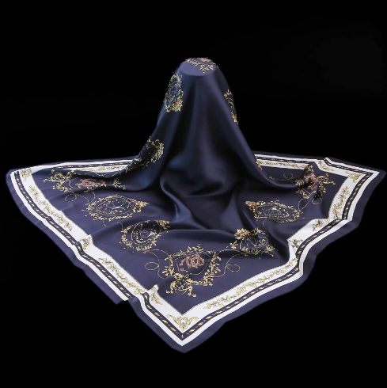
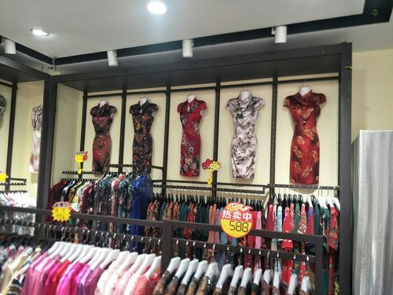

一、丝绸介绍
丝绸，一种纺织品，用蚕丝或合成纤维、人造纤维、短丝等织成；用蚕丝或人造丝纯织或交织而成的织品的总称。 在古代，丝绸就是蚕丝（以桑蚕丝为主，也包括少量的柞蚕丝和木薯蚕丝）织造的纺织品。现代由于纺织品原料的扩展，凡是经线采用了人造或天然长丝纤维织造的纺织品，都可以称为广义的丝绸。而纯桑蚕丝所织造的丝绸，又特别称为“真丝绸”。
二、杭州丝绸
杭州丝绸，浙江省杭州市特产，中国国家地理标志产品。 杭州丝绸，质轻.柔软，色彩美丽，在中国传统丝织业中占据重要地位。距今四千七百年的良渚出土丝织物就已揭示了杭州丝绸的历史之久，唐代大诗人白居易“丝袖织绫夸柿蒂，青旗沽酒趁梨花”的诗句又道出了当时杭州丝绸的水准之高，旧时清河坊鳞次栉比的绸庄更见证了丝绸经济的繁荣。 2011年9月19日，原国家质检总局批准对“杭州丝绸”实施地理标志产品保护。
 